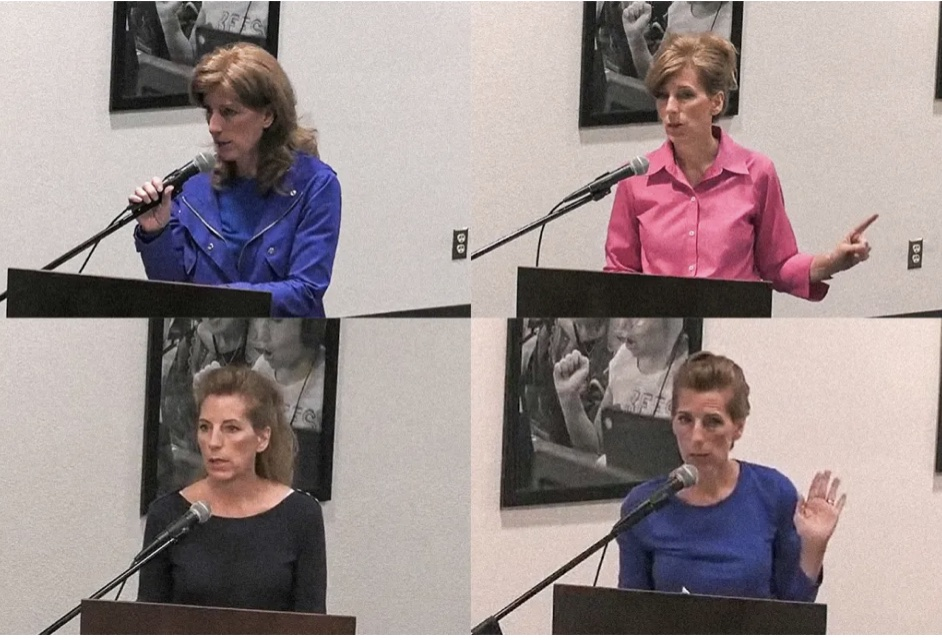
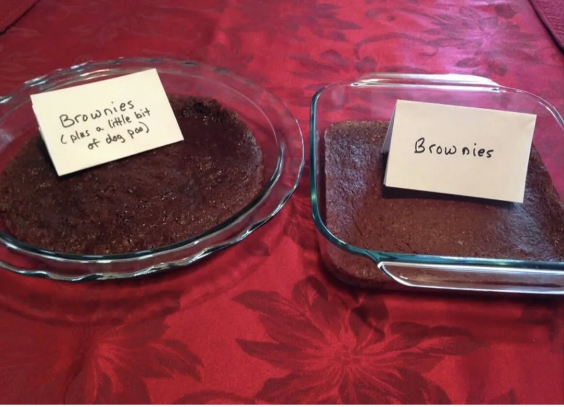
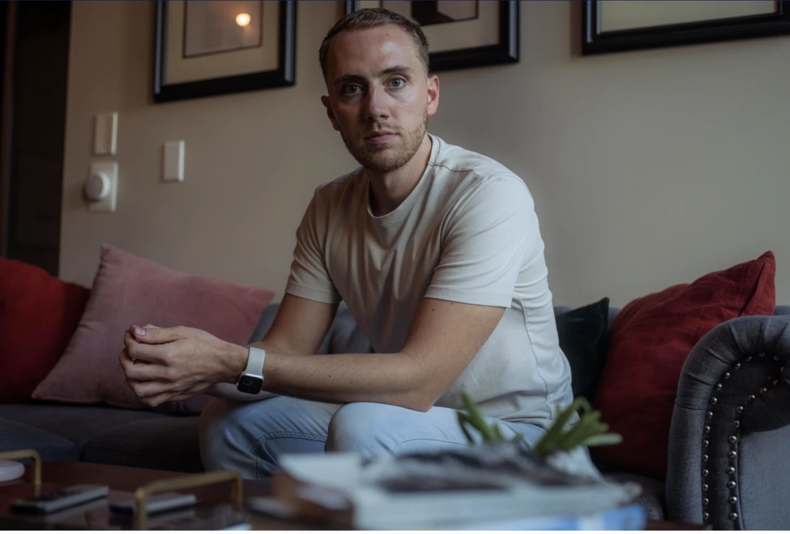

Weston Brown said he was outraged when he discovered that his mother was leading a campaign to ban books with sex and LGBTQ themes from public school libraries. (Allan Nakash for NBC News)
Aug. 11, 2022
This article was published in partnership with ProPublica, a nonprofit newsroom that investigates abuses of power. Sign up to receive their biggest stories as soon as they’re published.
It also is co-published with The Texas Tribune, a nonpartisan local newsroom that informs and engages with Texans. Sign up for The Brief Weekly to get up to speed on their essential coverage of Texas issues.
GRANBURY, Texas — Weston Brown was scrolling through Twitter last month when he came across a video that made his chest tighten. It showed a woman at a school board meeting in North Texas, calling on district leaders to ask for forgiveness.
“Repentance is the word that’s on my heart,” she said near the start of the video.
For months, the woman in the clip had been demanding that the Granbury Independent School District ban from its libraries dozens of books that contained descriptions of sex or LGBTQ themes — books that she believed could be damaging to the hearts and minds of students. Unsatisfied after a district committee that she served on voted to remove only a handful of titles, the woman filed a police report in May accusing school employees of providing pornography to children, triggering a criminal investigation by Hood County.
Now, in the video that Weston found online, she was telling the school board that a local Christian pastor, rather than librarians, should decide which books should be allowed on public school shelves. “He would never steer you wrong,” she said.
The clip ended with the woman striding away from the lectern, and the audience showering her with applause.
Weston, 28, said his heart was racing as he watched and rewatched the video — and not only because he opposes censorship. He’d instantly recognized the speaker.
It was his mother, Monica Brown.
The same woman, he said, who’d removed pages from science books when he was a child to keep him and his siblings from seeing illustrations of male and female anatomy. The woman who’d always warned that reading the wrong books or watching the wrong movies could open the door to sinful temptation. And the one, he said, who’d effectively cut him off from his family four years ago after he came out as gay.
“You are not invited to our house for Thanksgiving or any other meal,” his mother had texted to him in November 2018, eight months after he revealed his sexual orientation to his parents.
Weston, who lives with his partner in San Diego, had long ago come to terms with the idea that he would never again have a meaningful relationship with his parents. He still loved them and desperately missed his younger siblings, he said, but he was done trying to convince his mom and dad that his sexuality wasn’t a choice or a sin. He was done challenging their religious beliefs and praying for them to change.
Until he saw the video of his mom at a school board meeting.
In recent months, Weston has watched as the same foundational disagreements that tore his family apart have begun to divide whole communities. Fueled by a growing movement to assert conservative Christian values at all levels of government, activists across the country have fought to remove queer-affirming books from schools, repeal the right to same-sex marriage, shut down LGBTQ pride celebrations and pass state laws limiting the ways teachers can discuss gender and sexuality.
Monica Brown, who served on a school district book review committee in Granbury, has called the process a sham. She filed a police report in May accusing school employees of providing pornography to children. (Granbury ISD, NBC News)
Much as the seemingly intractable arguments over America’s pandemic response and conspiracy theories about the 2020 election have led to fractured personal relationships in recent years, these clashes over gender and sexuality have pitted neighbors against neighbors, parents against teachers and — in the case of the Browns — a son against his mother.
“It was one thing when my parents’ beliefs were causing this rift between us and it was just a family matter,” Weston said. “But seeing now that she’s applying those same views to public activism, at a time when so many basic rights are being challenged, I couldn’t stay quiet about that.”
Monica, 51, who has homeschooled all nine of her children and serves as the director of a private Christian education cooperative, declined to be interviewed or answer written questions. In a series of email exchanges with NBC News, she initially invited a reporter to discuss the article over dinner at her home in Granbury, but in a subsequent message, she said her husband would not allow the meeting, adding, “I have been advised to not speak with you at all.” Her husband also declined to be interviewed.
In public, Monica has denied targeting LGBTQ books. At a recent school board meeting, she said her only objective has been to protect children from sexually explicit content — gay or otherwise.
“There’s nothing about LGBTQ involved in this,” she said. “There are LGBTQ books that are sexually explicit, yes. They are wrong, too. If they are between men and men, women and women, cats and women, dogs and women, whatever, that is not appropriate educational content.”
That statement, however, doesn’t square with many of the books that she has flagged for removal at Granbury. Several of the titles on her list feature LGBTQ storylines but contain no sexually explicit content. That includes “Drama,” by Raina Telgemeier, a graphic novel that depicts gay and bisexual characters navigating the routine awkwardness of middle school crushes.
Of the nearly 80 library books Monica and her supporters want removed, 3 out of 5 feature LGBTQ characters or themes, according to an NBC News analysis of titles posted on GranburyTexasBooks.org, a website where the activists have compiled parent reviews of books they want banned. In addition to sexually explicit content, the site calls for books to be removed for “normalizing lesbianism,” focusing on “sexual orientation” and promoting “alternate gender ideologies.”
Monica has also signaled anti-LGBTQ views in formal library book challenges that she’s sent directly to Granbury school officials, according to copies of the forms obtained through a public records request. In one instance, she criticized a biography of notable women in part because it included the story of Christine Jorgensen, a trans woman who made national headlines in the 1950s for speaking openly about her gender-confirmation surgery. She suggested replacing that book with a Christian biography series about girls and women who used their talents to serve God — “biographies of truly great Americans,” she wrote.
After watching the video of his mom at the school board last month, Weston skimmed through excerpts of the books she wanted pulled. It seemed to him that she and her supporters were pushing public schools to adhere to some of the same strict religious ideologies that he says he suffered under as a child.
He thought about all the students, at Granbury and across the country, who might benefit from reading the types of books that were off-limits to him growing up.
With tears in his eyes, he started to type a tweet on the afternoon of July 3.
“This is my mom,” he wrote, with a link to the school board meeting video. “Seeing her advocate for the erasure of queer representation is crushing. Coming up on the 5 year anniversary of being effectively cut off from my family and siblings after coming out in 2018.”
He hesitated, knowing he would be reopening old wounds for the world to see. He didn’t want to do anything to hurt the woman who’d raised him, he said.
But trying to get librarians arrested?
Weston added one more line to his post — “Much love to those standing up and pushing back for representation” — along with a rainbow flag emoji. And then he hit send.
Weston has many fond memories growing up in the suburbs between Dallas and Fort Worth, about an hour from his parents’ current home in Granbury. He recalled summer days splashing in their backyard swimming pool, family ski vacations to Colorado and hours spent at the public library with his mom, who fostered his love of reading.
“I didn’t really have friends growing up, and going to make new friends via fictional characters was always something I looked forward to,” he said. “It was a beautiful way to leave my world and go somewhere better.”
But in a conservative Christian home, some content was off-limits.
Although the Brown family’s bookshelves were lined with classics, such as books from C.S. Lewis’ “Chronicles of Narnia” series, many popular titles were forbidden, Weston said. That included the Harry Potter series, which he said his mother, like many other conservative Christians, regarded as a satanic depiction of witchcraft.
Weston, the eldest child, said his mother also did her best to shield him and his siblings from words or images that might stir sexual curiosity. He remembered being told to look down at the floor anytime they walked through the women’s underwear section at department stores. Even as a child, he said, he was more intrigued by the marketing photos on display in the men’s section — though he didn’t dare tell anyone.
The lessons on purity didn’t stop after he became an adult.
In 2015, when he was 20 and still living with his parents, he returned home late one evening after seeing “Avengers: Age of Ultron,” a PG-13 superhero movie that his mother disapproved of. When he walked into his kitchen, he said, he found two pans of brownies waiting for him, along with a stack of articles printed off the internet about the corrosive influence of Marvel comics and films
One pan of brownies was normal. The other had a label that warned it had been baked with a small amount of dog poop mixed in.
Monica Brown posted this picture on Facebook after she baked two batches of brownies — one normal and one with dog poop mixed in — to teach her then-20-year-old son a lesson about purity after he went to see “Avengers: Age of Ultron,” a PG-13 superhero movie that she disapproved of. (Courtesy Weston Brown)
“Poo anyone? Just a little?” Monica wrote later, when she posted an image of the brownies on Facebook. “How much yuck is too much?”
The moral of the illustration, which is popular among some evangelical Christians: If you wouldn’t eat brownies that might harm your body, then why would you expose yourself to movies, books or music that might harm your soul?
Her son was disgusted, but he didn’t push back on the lesson.
“She made her point,” he said, “and we never spoke about it again.”
That was the same year that the U.S. Supreme Court legalized same-sex marriage — a tectonic cultural development that disturbed many evangelical Christians. Afterward, Monica posted frequently on social media about the “dangerous” gay agenda that she believed was on the march across mainstream U.S. society. She warned in posts that Disney was secretly pushing LGBTQ lifestyles on children in movies such as “Toy Story 4,” and shared a link to a video alleging that pop star Katy Perry was conspiring with satanic forces to convince teens to embrace homosexuality.
Weston said he didn’t challenge his mom’s views while he lived with her. He’d spent years struggling to reconcile his desires with the religious values his parents had instilled in him — trying to convince himself that the butterflies in his stomach any time he was around one of the boys at church was just something friends felt for each other. It didn’t help, he said, that he’d had no meaningful sex education as a teenager — just a blanket instruction to abstain until marriage — and no understanding of LGBTQ identities or what those letters even meant.
But by 2018, he was 23, living on his own and finally confident enough to tell his parents what he’d always known about himself.
“Dear Mom and Dad, I’m writing this to share something that I’ve wanted to share with you yet have held back for a long time,” he wrote in an email to his parents in February 2018. “It is with great relief, clarity and vulnerability that I share this with you: I am gay.”
He ended the note: “I pray that you receive this with an open mind.”
That prayer, he said, went unanswered.
Over the next year and a half, he said, his parents tried to convince him that he was mistaken. Through a series of emotional lunch meetings, phone calls and text messages, he said, they urged him to see a Christian counselor in the hopes that he could learn to overcome his homosexual urges. They invited Weston to church — the one place where they would allow him to see his younger siblings — and openly wondered about what corrupting influences might have led their son down this sinful path.
For months, his mother sent him links to articles from Christian news sites with headlines like “Evidence shows sexual orientation can change” and “It’s not gay to straight, it’s lost to saved” — links that she was simultaneously posting publicly on Facebook. But after Weston made clear that there was no prayer or summer camp that would change who he is, he said his parents made clear that he was not welcome at their home, even on holidays or birthdays.
“You are not rejected, not at all, and never will be,” his father, James Brown, texted to him in October 2019, more than a year after he came out. “The lifestyle you have chosen goes against God and therefore that is the rejection you have chosen.”
His father added, “Have you ever considered the pain you have put your mother and I through?”
That same day, Monica sent him a message on Facebook to say that she was praying for dark forces to be cast out of him.
“I specifically come against evil that has entered you from the movie ‘It,’” she wrote, referring to the time when Weston, at around age 10, had watched part of the Stephen King mini-series about a murderous clown. “Clown demons have to go in the mighty name of Jesus.”
She ended the message, “I love you, Mom.”
Monica Brown’s campaign to rid schools of books that she considers obscene began late last year with a trip to the Granbury Middle School library, which sometimes hosts robotics competitions that her homeschooled children have competed in.
She started flipping through a few books while she was there and was disturbed by what she found, according to a May interview she recorded with The Blue Shark Show, a local far-right internet talk show hosted by a Republican former state legislator.
“What I saw was negative, dark — things nightmares are made of,” Monica said, without sharing more details.
Her sudden interest in library books coincided with a wave of similar book ban attempts across the country last year amid a growing conservative backlash against school programs and lessons dealing with racism, gender and sexuality.
The books that have drawn the most intense scrutiny, both in Granbury and nationally, are largely young adult novels and memoirs that contain passages with explicit descriptions of sex or rape, especially those featuring LGBTQ themes and characters. Defenders of these books argue that any sexual content is presented in the context of broader narratives that help teens understand and process the world around them.
The fight has been particularly heated in Texas, where Republican state officials, including Gov. Greg Abbott, have gone as far as calling for criminal charges against any school staff member who provides children with access to novels, memoirs and sex ed books that some conservatives have labeled as “pornography.”
Monica didn’t say in her talk show interview whether she had reported her concerns to the school district. But in early January, Granbury’s schools superintendent, Jeremy Glenn, called a meeting with district librarians and shared that he’d started to get complaints about library books.
“Let’s call it what it is, and I’m cutting to the chase on a lot of this,” Glenn told the librarians, according to a secret recording of the meeting obtained by NBC News, ProPublica and The Texas Tribune and first reported in March. “It’s the transgender, LGBTQ and the sex — sexuality — in books. That’s what the governor has said that he will prosecute people for, and that’s what we’re pulling out.”
When asked about his comments, Glenn released a statement in March saying the district was committed to supporting students of all backgrounds. And although he said the district’s primary focus is educating students, Glenn said “the values of our community will always be reflected in our schools.”
In the days after the meeting, district employees pulled more than 130 books off of school library shelves and announced the formation of a volunteer committee to review them.
Monica was one of the first residents appointed. From the start, she felt the process was a sham, she said in her Blue Shark interview. The first two meetings were held at times when she couldn’t attend, she said, and by the time she arrived at the third meeting, the committee had already voted to return most of the books to shelves.
“That meeting was completely disrupted in the sense that we didn’t vote at all because I kept asking questions,” she said.
In the end, over objections from her and one other member, the volunteer committee voted to ban only three books: “This Book Is Gay,” a coming-out guide for LGBTQ teens by transgender author Juno Dawson that includes detailed descriptions of sex; “Out of Darkness,” by Ashley Hope Pérez, a young adult novel about a romance between a Mexican American girl and a Black boy that includes a rape scene and other mature content; and “We Are the Ants,” by Shaun David Hutchinson, a coming-of-age novel about a gay teenager that includes explicit sexual language.
The district returned dozens of other titles to shelves. Several of the books had no sexual content, the committee found. For the others, a majority of committee members believed that any descriptions of sex were age-appropriate when read in complete context.
Monica was outraged, she said on the Blue Shark Show in early May.
“I think they’re breaking the law,” she said.
That same week, she put that belief to the test. On May 2, she and another disillusioned member of the book committee filed a police report with Hood County Constable Chad Jordan alleging that the district was making pornography available to students, according to a copy of the incident report. Four days later, Hood County constables visited Granbury High School to investigate the claim.
In a letter sent to NBC News on Wednesday and dated Aug. 1, Jordan said his office could not release additional information about the case because the investigation remained active. In a statement issued in May, Glenn, the Granbury superintendent, said the school district was cooperating with law enforcement.
Dear Mom and Dad, I’m writing this to share something that I’ve wanted to share with you yet have held back for a long time. It is with great relief, clarity and vulnerability that I share this with you: I am gay. I pray that you receive this with an open mind. — Weston Brown
In the months since, Monica has continued to keep the pressure on, speaking at every school board meeting, filing more than a dozen additional book challenges and, in the process, becoming a prominent and polarizing figure in Granbury.
Her activism has been praised by several leading conservative figures in town, including members of the Hood County Republican Party and Melanie Graft, the school board member who selected Monica to serve on the book review committee. Graft, who rose to local prominence in 2015 while leading a conservative campaign to remove LGBTQ-themed picture books from the children’s section at Granbury’s public library, did not respond to messages requesting an interview.
Monica’s fight has also come at a personal cost. In social media posts and public remarks, she’s said the hours spent reviewing library books have required her to sacrifice time with her family and led to a barrage of personal attacks from residents who oppose her efforts.
In May, Adrienne Martin, a Granbury parent and chair of the Hood County Democratic Party, was recording on her phone as she confronted Monica outside a school board meeting.
“You want to have librarians arrested,” Martin said as Monica walked away. “That’s fascism. You’re a fascist.”
At a board meeting last month, Monica tried to explain why she’s fought so hard to remove books from a school district that her kids do not attend. She’s doing it, she said, for all the other children.
“I feel like it’s a raging fire,” she told the board, “and I’ve got a water pistol.”
Weston Brown said he’s purchased some of the LGBTQ books his mother wants removed from schools and saw himself reflected in the stories — an experience he said he was denied as a teenager. (Alan Nakkash)
After Weston’s initial post criticizing his mother, he fired off several more tweets denouncing her efforts in Granbury.
It didn’t take long before the posts had reached his parents. His dad texted him to demand that he apologize to his mother.
“We have not come out against the LGBT Community,” his father wrote, insisting that their efforts at Granbury schools were focused on “pornography” and nothing else. “I know you are hurt by our decisions but we are also hurting and have been ever since you said you were Gay.
“We have not been hateful to you,” his father added.
Weston replied: “All I can say is I pity you and wish you the best.”
Soon, opponents of Monica’s efforts began posting images of her son’s tweets on Granbury community Facebook groups — making a family’s private rift public.
“Call your son and leave ours alone!” a woman wrote in response to one of Monica’s many public posts about obscene library books.
“Your crusade against books won’t bring your son back to you or make him straight,” another Granbury resident wrote. “Go home and look in the mirror, fix your house before you worry about others.”
Monica never publicly addressed her son’s tweets, but in response to a Facebook post about them, she wrote: “You can believe what you want about me. In the meantime, I will carry on doing my best to finish out my life for an audience of One.”
A couple of weeks later, she finally got in touch with her son. Two days after NBC News contacted her to request an interview, she texted him to let him know that she didn’t plan to share “personal family details” with a reporter.
“I did not come out against LGBTQ at all — ever,” she wrote, before adding: “I love you, and I pray for you.”
Weston studied the message, thinking back to all the hours he’d spent pleading with her to accept him for who he is rather than trying to control and change him. It hurt, having the woman who’d given birth to him tell him that his sexual orientation was an abomination.
He didn’t want to revisit that trauma, he said. He just wanted his mom to stop pushing her beliefs on other people’s kids.
Weston re-read her text message one more time. He started to type a reply, then stopped. Instead he closed the message and set his phone aside.
He’d already told his mom everything that needed to be said.
This story was originally published by NBC News.